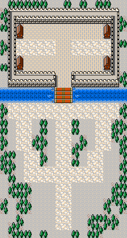
256 × 480 像素 · 16 × 30 格 第 02 关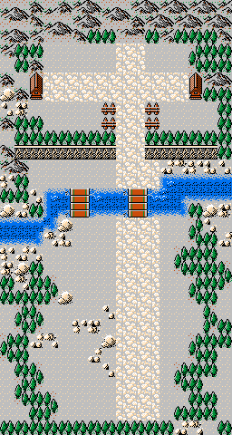
256 × 480 像素 · 16 × 30 格 第 03 关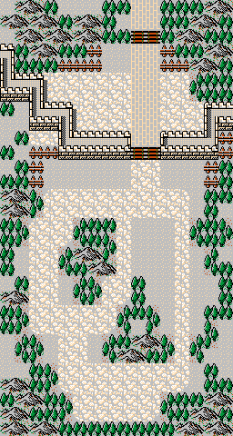
256 × 480 像素 · 16 × 30 格 第 04 关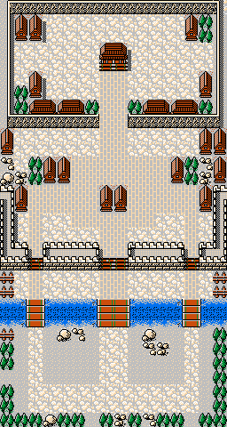
256 × 480 像素 · 16 × 30 格 第 05 关 256 × 480 像素 · 16 × 30 格
第 06 关
256 × 480 像素 · 16 × 30 格
第 06 关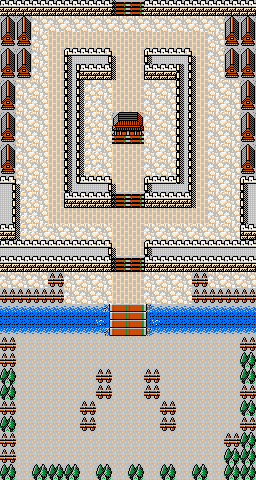
256 × 480 像素 · 16 × 30 格 第 07 关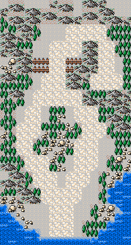
256 × 480 像素 · 16 × 30 格 第 08 关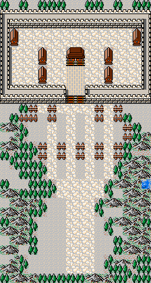
256 × 480 像素 · 16 × 30 格 第 09 关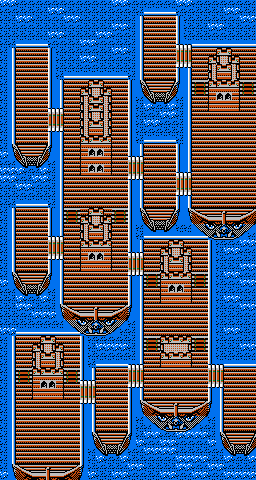
256 × 480 像素 · 16 × 30 格 第 10 关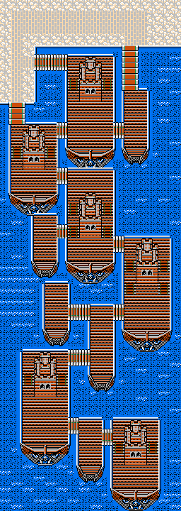
256 × 720 像素 · 16 × 45 格 第 11 关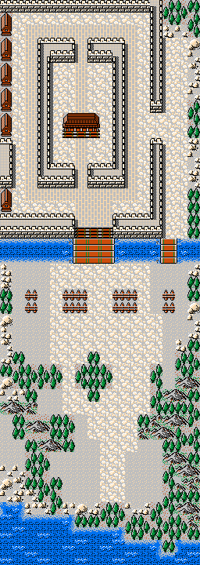
256 × 720 像素 · 16 × 45 格 第 12 关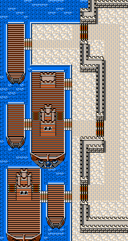
256 × 480 像素 · 16 × 30 格 第 13 关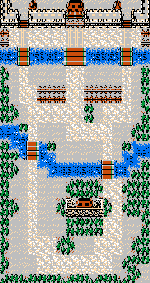
256 × 480 像素 · 16 × 30 格 第 14 关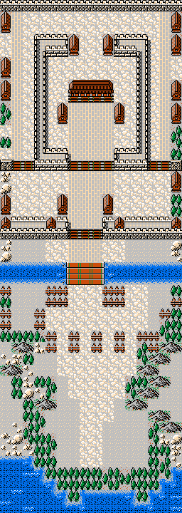
256 × 720 像素 · 16 × 45 格 第 15 关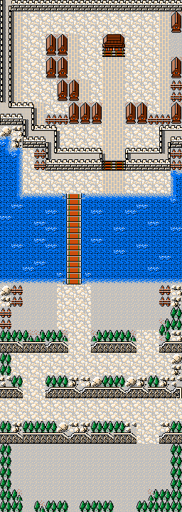
256 × 720 像素 · 16 × 45 格 第 16 关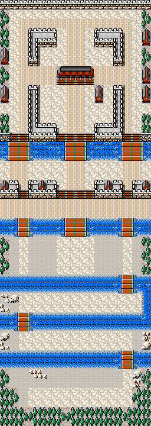
256 × 720 像素 · 16 × 45 格 第 17 关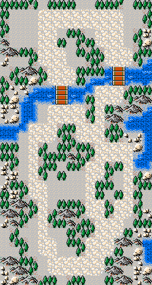
256 × 480 像素 · 16 × 30 格 第 18 关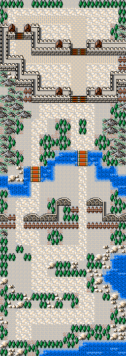
256 × 720 像素 · 16 × 45 格 第 19 关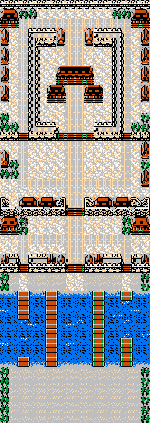
256 × 720 像素 · 16 × 45 格